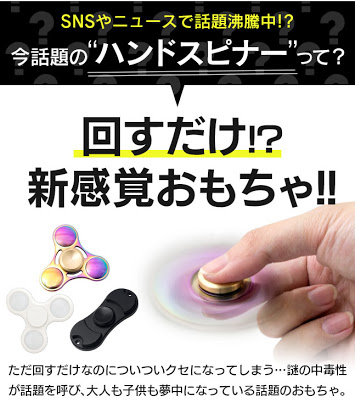
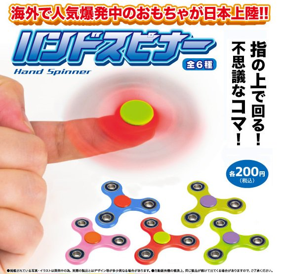

Pseudo-science
Fake Advertisings
The Best Healthy Drink!
This is a joke Advertisings.
DHMO = H2O = The water.
This is joke.
But there are many fakes in advertisings.
Minus Ion
http://www.naturalweb.co.jp/shopping/life/orela/You may hear that "Minus ion" is good for the health.
But do you explain "Why minus ion is good?"
or "What is minus ion?"?
In fact, minus ion is UNKNOWN substance.
However, we feel it is healthy!
Hydrogen/Oxygen water
Similarly, "Hydrogen water" is good for our health.
It is said that remove harmful oxygen from the body.
WHY?
It is reason that hydrogen in water can react oxygen.
But, hydrogen is insoluble...
In turn, "Oxygen water" is NOT scientific.
We can supply O2 from it.
...Some times of breath.
Airborne
Airborne is a supplement that can improve
the immune system.
But according to ABC News, it may not to be effective.
Conclusion in this part
You may be fooled by advertisements.So, be careful it.
And we should consider buying the doubtful goods.
Advertising of “the fashion”
"fasion"
"trend"
"everyone has it"
Have you ever bought anything by these words?Advertising of clothes
Recently, a lot of women are wearing cardigans of this form.Some people feel “cute!” and buy it, and others buy it because of “ the fashion”.
Advertisement of event
It is already becoming the duty to do shoppingfor these events.
Advertisement of application
We can sell unnecessary goods, but we can buy many goods easily. (Contains unnecessary goods.)
Trendy food
Most people bought it to check whether it is delicious.Advertisement of toy
Hand-spinner is a simple toywhich is pupular in America recently.  
Advertisement which used trendy entertainer
You know, he became famous last year.Advertisement which used trendy entertainer
This is sold for 2,160 yen.It seems
expensive…
- “The fashion” is often made up by advertisements.
We want to buy trendy things.
If we buy it, can we really become happy?
When the fashion passes, it may become unnecessary.We should select “things of purpose to use” than “things of purpose to buy”.
Advertisement showing cheaper
with newspaper?
The store want more customer to visit
than other store.
Also, they want customer to buy more items.


to show items attractive for consumer.
In one of them, a way to write a price.
bright colors or bordered words
than written by dark colors.
We imagine arbitrarily to the products of easy
to find of the flier is good value.
But it is not always good value.
If you want to buy products with good value,
you should to compare some fliers and identify
that is really good value.
Unique Advertisting
1. First unique advertising
Q: What do you think this advertising means?A: This is an advertising when
McDonald’s began business at night.
2. Second unique advertising
This is an advertising of the bedding makerin Switzerland.
A: This advertising makes the bed look like a battery.
3. Third unique advertising
This is an advertising of the laundry detergentusing eye illusion.
Please look at the detergent in the center of the picture for 10 seconds.
4. Fourth unique advertising
This is an advertising in Malaysia.Q: What do you think this advertising means?
4. Fourth unique advertising
This is an advertising in Malaysia.A: This is an advertising of correction fluid.
A boy is buying “Coca-Cola” at the vending machine.
Next, the boy puts two cans on the floor and stands on it.
The boy bought “Pepsi Cola” by stepping on two cans.
Finally, the boy left “Coca-Cola” and brought only “Pepsi Cola”!
This was Pepsi Cola’s adverting.